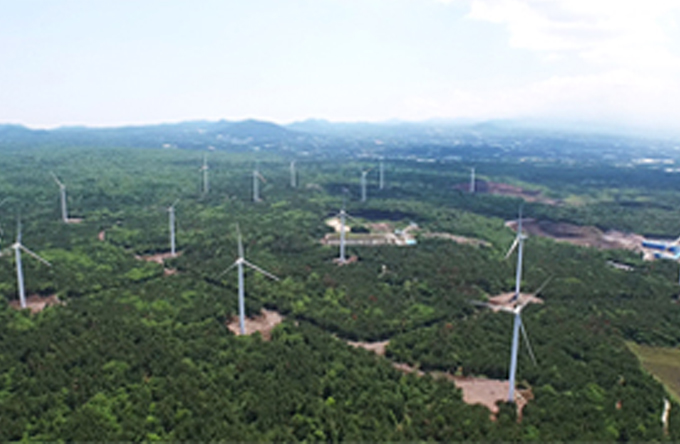
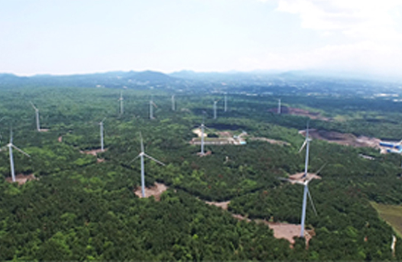
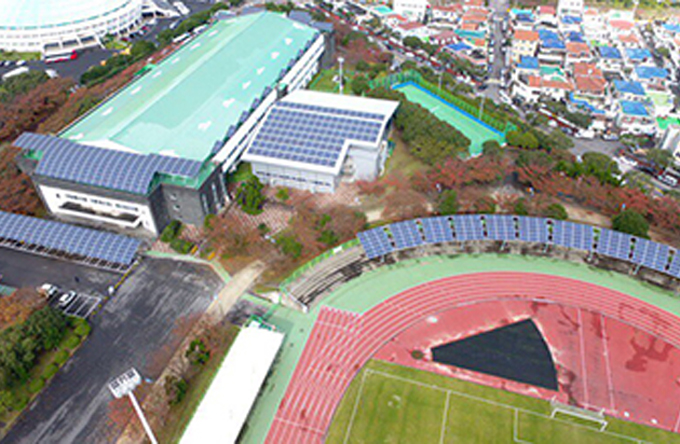
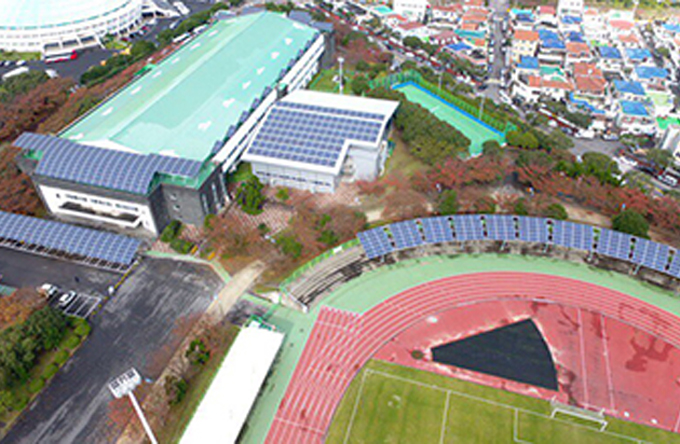
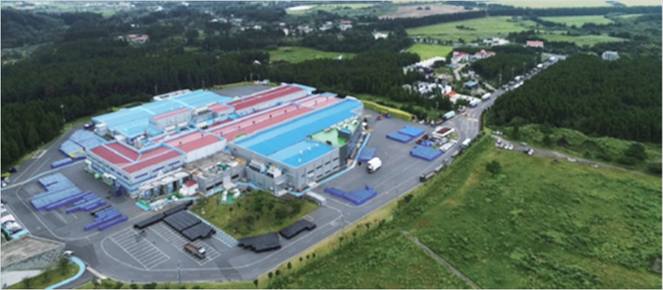
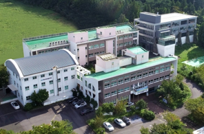
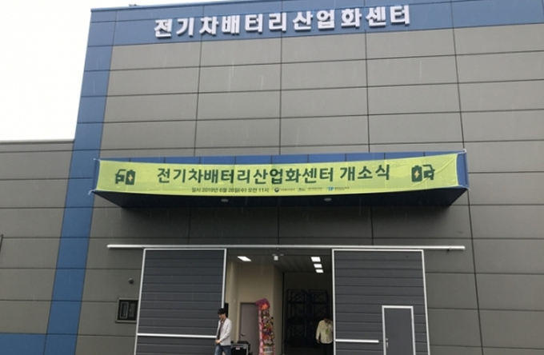
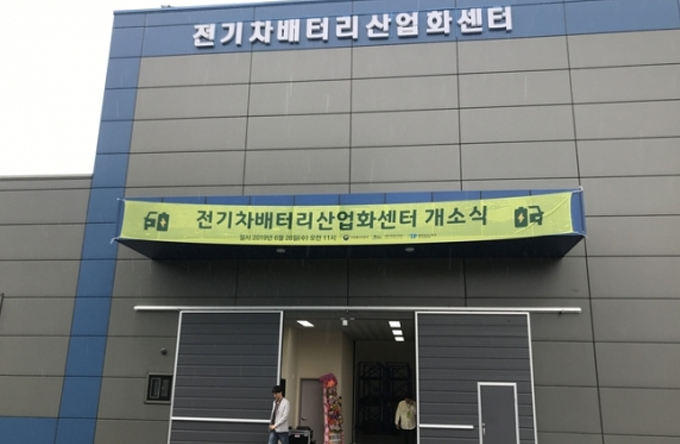

지원기관 정보
- Home
- 투자환경
- 지원기관 정보
제주 지원기관 정보

제주특별자치도청 관광국 투자유치과

- 주소 : (63122) 제주특별자치도 제주시 문연로 6(연동) / 6, Munyeon-ro, Jeju-si, Jeju-do, 63122
- 문의처 : +82-64-710-3372 ~ 5 / zheng@korea.kr
국제자유도시 제주의 투자유치 정책 수립과 국내외 투자유치 활동을 전개하는 투자유치 전담 부서입니다.
투자상담, 인센티브 제공 및 투자가의 성공적인 투자를 위한 사후관리까지, 국내외 투자가들을 위한 토탈 매니지먼트 서비스를 제공합니다.
관광국 투자 유치과
-
일자리 노동정책과
- 투자정책수립
- 투자진흥지구
- 외국인투자지역
- 부동산투자이민제도 관리
-
창업진흥과
- 국내기업유치 및 홍보
- 국내기업 투자인센티브 지원
- 국외투자유치 및 홍보
- 국외기업 투자인센티브 지원
-
투자유치과
- 관광개발사업 승인 및 관리
-
국제통상과
- 유원지개발사업 승인 및 관리

제주특별자치도청 미래전략국

- 주소 : 63125) 제주특별자치도 제주시 신대로 64
- 홈페이지 : https://www.jeju.go.kr/group/part29/dept/org.htm
제주특별자치도 미래전략국
-
저탄소정책과
- 탄소없는 섬, CFI2030 프로젝트
- 공공주도 해상풍력
- 에너지 자립마을 조성
- 전기차 연관 산업 육성 및 보급
-
미래전략과
- 제주 4차 산업혁명 대응 산업 생태계 조성
- 제주 4차산업혁명 펀드 운영
- ICT 신산업 육성
- 블록체인 산업 육성
- 제주 화장품 산업 육성
- 신기술 스타트업 육성
- 미생물 자원 산업화
-
디지털융합과
- 빅데이터 산업 생태계 조성
- 제주 데이터 허브 구축
- 데이터 기반 IoT 플랫폼 구축
- 스마트 드론
- 드론 규제 샌드박스 & 특별자유화 구역
- ICT기업 육성 및 지원

제주국제자유도시개발센터(Jeju Free International City Development Center)
제주국제자유도시 조성 전담기구로 설립된 국토교통부 산하 국가 공기업입니다.
첨단과학, 관광, 교육, 의료, 청정 산업 등 국제자유도시 조성을 위한 핵심산업을 추진합니다.

- 제주국제자유도시개발센터 홈페이지 : https://www.jdcenter.com
제주에너지공사
제주의 무한한 친환경 에너지 자원을 활용하여 신재생에너지 인프라 조성, 생산, 운영, 공급 그리고 R&D 까지 공공주도의 신재생에너지 발전 사업을 추진하는 공기업입니다.
제주 에너지 자립을 위한 CARBON FREE ISLAND 2030의 핵심 프로젝트를 전담합니다.

- 제주에너지공사 홈페이지 : https://www.jejuenergy.or.kr

-
 
동북 · 북촌 풍력발전단지

동북 · 북촌 풍력발전단지
-
 
공공시설 활용 태양광 발전단지

공공시설 활용 태양광 발전단지
-

 신창 풍력발전단지
신창 풍력발전단지
-
 김녕 풍력발전단지
김녕 풍력발전단지
-

 행원 풍력 · 태양광 발전단지
행원 풍력 · 태양광 발전단지
신재생에너지 홍보관 -

 가시리 풍력 · 교래리 태양광 발전단지
가시리 풍력 · 교래리 태양광 발전단지
제주특별자치도개발공사(JPDC)
제주의 지하수를 개발하여 대한민국 먹는샘물 시장 1위의 브랜드 ‘삼다수’를 생산하는 제주 공기업입니다.
- 제주특별자치도개발공사 홈페이지 : http://www.jpdc.co.kr
제주특별자치도개발공사(JPDC) 주요 프로젝트
먹는샘물 사업
- 대한민국 생수시장 점유율 1위 42%
- 대한민국 먹는샘물 1등 브랜드 <삼다수>
- 연간 83만톤 생산 공장 및 R&D센터 운영

감귤가공 사업
- 제주 감귤농축액 가공 공장(700톤/1일 처리) 운영
- [제주삼다수 감귤주스] 브랜드 개발
연구개발사업
- 제주 지하수 보전, 관리, 품질연구개발 사업
공공주택 사업
- 제주도민을 위한 주택 임대 사업

※ 관련링크 : http://www.jpdc.co.kr/samdasoo/index.htm
제주테크노파크 (Jeju Techno Park)
기업에 필요한 기술개발, 사업화 지원, 마케팅, 인력양성과 같은 제주의 산업발전과 기업 성장 지원 솔루션 기관입니다.
제주의 다양한 산업에 대한 정보와 기술개발, 기업 지원 프로그램 등 기업이 필요한 서비스와 정보를 제공합니다.

- 제주테크노파크 홈페이지 : http://www.jejutp.or.kr
제주테크노파크 운영시설 현황
-

 바이오 융합센터
바이오 융합센터
- 제주 청정 화장품 식품 산업화 지원
-
 디지털융합센터
디지털융합센터
- 제주 ICT 기업지원
- 제주빅데이터센터 운영
-

 용암해수산업화지원센터
용암해수산업화지원센터
- http://www.jejulavawater.com
-

 생물종다양성연구소
생물종다양성연구소
- 제주 아열대 생물자원 산업화 연구
-
 
에너지융합센터

에너지융합센터
- 제주 ICT 기업지원
- 제주빅데이터센터 운영
-

 본사
본사
- 제주 기업지원 및 산업육성
제주창조경제혁신센터 (JEJU Center for Creative Economy & Innovation)
제주의 스타트업 생태계 조성을 전담하고 있는 제주 최초의 스타트업 지원기관 입니다.
제주의 스타트업과 투자지원 관련 정보를 제공합니다.

- 제주창조경제혁신센터 홈페이지 : http://jccei.kr
제주테크노파크 운영시설 현황
- 스타트업의 입주 및 보육 지원
- 인큐베이팅 프로그램 운영
- 시드머니 투자사업
- 체류지원 프로그램, 리모트워크 프로그램 운영
- 스타트업 지원 및 교육 프로그램 상시 운영